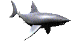

curiosidades
Nesta página você vai encontrar várias curiosidades sobre os tubarões, desde os maiores até os mais diferentes. Explore e descubra o lado incrível desses animais que reinam nos oceanos!
Tubarões são peixes que comem carne e vivem no mar
Todo tipo de tubarão é carnívoro. Muitos caçam suas presas ativamente, outros ficam à espreita para atacar, e alguns são necrófagos, alimentando-se de animais mortos ou moribundos, como baleias e focas.
O maior peixe do mundo é o tubarão-baleia
Ele pode chegar a 12 metros de comprimento, quase do tamanho de três carros juntos. Também pode pesar mais de 13 toneladas, o que equivale a três vezes o peso desses mesmos três carros!
Apesar do tamanho, o tubarão-baleia come presas minúsculas
Ele abre a boca enorme, engole um grande volume de água e filtra pelos espaços das brânquias. Assim, pequenos animais como krill, peixes pequenos e lulas-bebê ficam presos e são engolidos.
Tubarões-baleia podem dormir por meses
Acredita-se que eles afundem até o fundo do mar e fiquem lá quase sem se mover por várias semanas a cada ano. Isso ajuda a economizar energia quando a comida é escassa.
Os tubarões-frade também são enormes
Eles são os segundos maiores peixes, chegando a 10 metros de comprimento e quase 7 toneladas. Assim como os tubarões-baleia, eles filtram pequenos animais e partículas de comida da água do mar.
Alguns tubarões gostam de carne podre
O tubarão-da-Groenlândia se alimenta de todo tipo de animal morto, como baleias, focas, golfinhos, outros tubarões, lulas e até caribus afogados.
Alguns tubarões têm caudas maiores que o corpo
O tubarão-raposa comum pode chegar a 6 metros de comprimento, sendo metade só de cauda. Ele usa esse enorme rabo para bater e atordoar peixes menores antes de comê-los.
Tubarões respiram debaixo d’água com as brânquias
As brânquias ficam nas laterais da cabeça e são cheias de sangue. A água entra pela boca, passa pelas brânquias e sai pelas fendas, onde o oxigênio é retirado para o tubarão sobreviver.
Tubarões-tigre engolem todo tipo de lixo
Esse tubarão tenta comer quase tudo que encontra, achando que pode ser comida. Mas muitas vezes engole coisas que nem são alimentos, como latas e até sandálias de praia!
Tubarões-tigre chegam até a praia
Enquanto a maioria dos tubarões evita a costa para não ficar presa e morrer, os tubarões-tigre se aproximam da praia, principalmente à noite, em busca de comida. Eles nadam até em águas rasas que mal cobririam os joelhos, o que pode ser perigoso para quem está nadando.
A maioria dos tubarões prefere apenas alguns tipos de alimento
Um tipo de tubarão cabeça-dura gosta de comer apenas ouriços-do-mar. Porém, se ficar com muita fome, ele experimenta outros alimentos.
O maior peixe predador do mundo é o grande tubarão-branco
Na vida real, ele pode medir cerca de 6 metros de comprimento e pesar mais de uma tonelada. Os grandes tubarões-brancos vivem em várias partes do mundo, principalmente em mares mais quentes, e têm uma reputação temida.